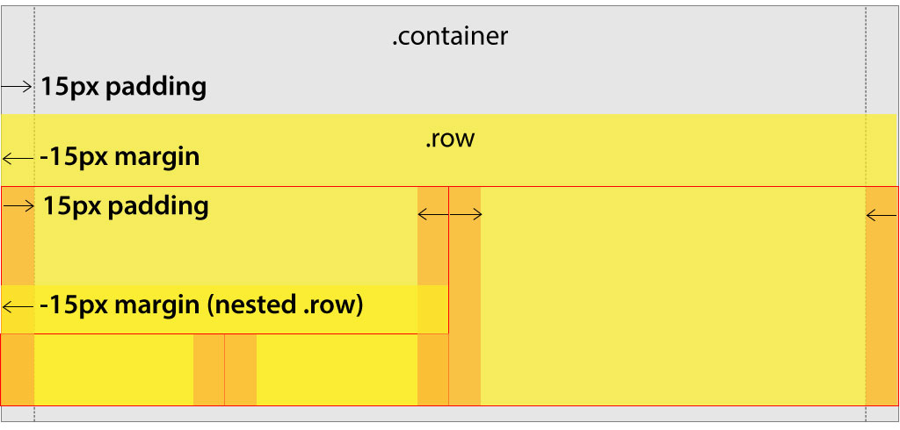

FEWD
Week 3 • Class 5
Responsive Web Design
Quick Review
- How do you "break" a float?
- Why would I use a class instead of an ID?
- What is the adjacent sibling selector and what does it do?
- How can I center a block element?
- What mnemonic helps us remember the shorthand property for setting margins and borders?
What We'll Cover
- Layout Techniques
- Responsive Web Design
- Pseudo Elements
Layout Techniques
Objectives: Layout
- Reproduce multiple column designs with floats
- Describe limitations with float designs
- Create a basic reuseable grid with floats
- Understand the difference between CSS Flexbox and Grid
Fluid Multicolumn Designs
container
row
col
col
How It Works
Container Collapse
To combat the floated elements causing their parent containers to collapse, we hack it:
div.container:: before,
div.row:: before {
display: table;
content: " ";
}

Float Grid
Build You Own Grid
Responsive Web Design
Objectives: Responsive Web Design
- Describe and differentiate Adaptive and Responsive Web Design
- Use media-queries to create an adaptive design
- Explain why the viewport meta tag is important
- Use flexible images
- Add media-queries to your grid to adjust for small format screens
Responsive vs. Adaptive

Responsive
Transitions smoothly
Adaptive
Snaps to breakpoints
Hallmarks of RWD
- Fluid grid
- Media Queries
- Flexible Images
Media Queries?
Media Queries is a CSS3 module allowing content to adapt to conditions such as screen size or orientation.
When the conditions of the query are satisified the styles within are applied.
Media Queries can also be used for adapting to other conditions, such as print and speech.
Mobile First Example
// Extra small devices (portrait phones, less than 576px)
// are the default (hence Mobile First)
// Small devices (landscape phones, 576px and up)
@media (min-width: 576px) { ... }
// Medium devices (tablets, 768px and up)
@media (min-width: 768px) { ... }
// Large devices (desktops, 992px and up)
@media (min-width: 992px) { ... }
// Extra large devices (large desktops, 1200px and up)
@media (min-width: 1200px) { ... }
Going in the Other Direction
// Extra small devices (portrait phones, less than 576px)
@media (max-width: 575.98px) { ... }
// Small devices (landscape phones, less than 768px)
@media (max-width: 767.98px) { ... }
// Medium devices (tablets, less than 992px)
@media (max-width: 991.98px) { ... }
// Large devices (desktops, less than 1200px)
@media (max-width: 1199.98px) { ... }
// Extra large devices (large desktops)
// No media query since the extra-large breakpoint has no upper bound on its width
Improve Our Grid
/* Standard Columns */
.col-1 { width: 25% }
.col-2 { width: 50% }
.col-3 { width: 75% }
.col-4 { width: 100% }
@media only screen and (max-width: 768px) {
/* For small and extra small devices: */
[class*="col-"] {
width: 100%;
}
}
Viewport Meta Tag
- Without instructions, mobile devices render pages at typical desktop screen widths, and then scale the pages to fit the mobile viewport
- If you don't set the viewport meta tag, your media queries don't fire
- Thank you Apple!
Viewport Meta Tag
<head>
<meta charset="utf-8">
<meta name="viewport" content="width=device-width,
initial-scale=1, shrink-to-fit=no">
...
</head>
width=device-width: sets the width of the viewport to the width of the deviceinitial-scale=1: sets the initial zoom level when visiting the pageshrink-to-fit=no: tells the device browser to reflow content instead of shrinking it
RWD
Experiment with Media Queries
Pseudo Elements
It's Kind of an Element
- Lets you style a specific part of the selected element
- Pseudo-classes can be used to style an element based on its state
- Keeps your HMTL semantic
- Careful about accessibility
You'll Use These
::before
Inserted as the first child
a::before { /* Add hearts before links */
content: "♥";
padding-right: 10px;
}
::after
Inserted as the last child
a::after { /* Add arrows after links */
content: "→";
padding-left: 10px;
}